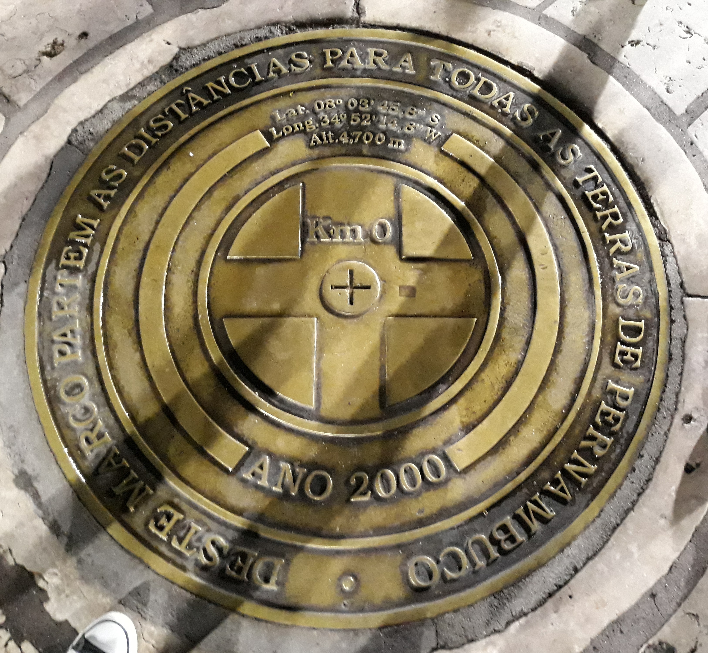

Marco de onde são contadas as distâncias rodoviárias
.jpg)
Na capital do estado de Pernambuco está localizado esse maravilhoso lugar, onde passado e presente se fundem, onde a natureza e as belas paisagens permitem que desfrutemos grandes reflexões sobre a vida!
Venha conhecer um pouco mais nessa matéria
A Praça Rio Branco, também conhecida como Marco Zero, é um espaço público localizado no bairro do Recife da cidade homônima, capital de Pernambuco.
O local fica próximo ao Porto do Recife e abriga o Marco Zero da cidade do Recife (instalado em 31 de janeiro de 1938, pelo Automóvel Clube de Pernambuco). É deste marco que são feitas todas as medidas oficiais de distâncias rodoviárias locais.
Oficialmente denominada de Praça Barão do Rio Branco, fica localizada na Av. Alfredo Lisboa conectada às ruas Marquês de Olinda, Rio Branco e Barbosa Lima.
Além do Marco Zero, existe na praça um busto do Barão do Rio Branco, escultura do francês Félix Charpeutier, colocada ali em 1917, em bronze com uma altura de 2,5m e foi inaugurada, sob um pedestal em pedra de 4,20m, esculpido por Corbiniano Vilaça, em 19 de agosto do mesmo ano. Dando a obra uma altura de 7m.
O norte da praça é banhado pelo estuário do porto do Recife, formado pelo Rio Capibaribe. O estuário é protegido por um dique natural, local em que se encontra o Parque das Esculturas com a famosa obra Coluna de Cristal de 32 metros de altura e inspirada em uma flor descoberta por Burle Marx e varias outras obras em cerâmica do artista Francisco Brennand. No dique encontra-se também a Casa de Banhos, que não existe mais, e o Farol do Recife. O dique tem uma extensão 4km de comprimento e começa no bairro de Brasília Teimosa.